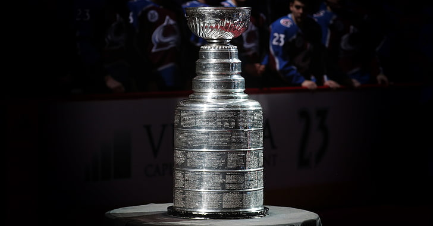
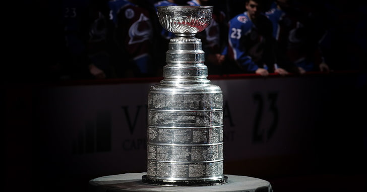

Mision
To support young athletes living Chicago's northside neighborhood, who have an interest in learning and playing soccer, with opportunities to learn and practice skills related to the game of hockey, specifically those skills around team cooperation and good sportsmanship
Vision
The Mighty Ducks Hockey League aspires to develop strong, well-rounded and mindful athletes through the building of character, self-discipline, and leadership.
General Information
The Mighty Ducks Soccer League was established in 1996 to provide athletes residing Chicago's northside neighborhoods an environment in which to learn and play hockey. To be a member of MDHL, you must be between the ages of 4 - 12 and reside a Chicago northside neighborhood. MDHL ran by o small full-time staff, and relies on the generous volunteer time of parents and previous league members